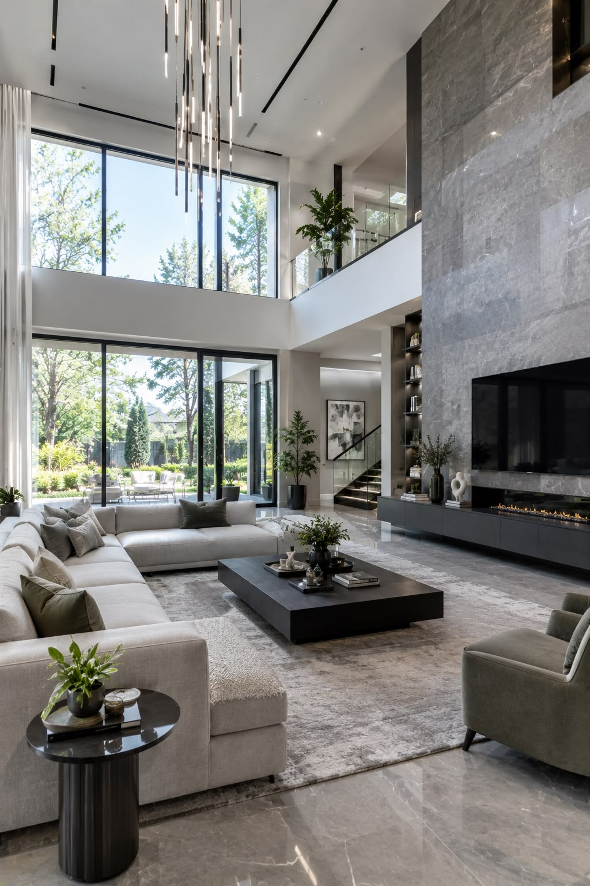
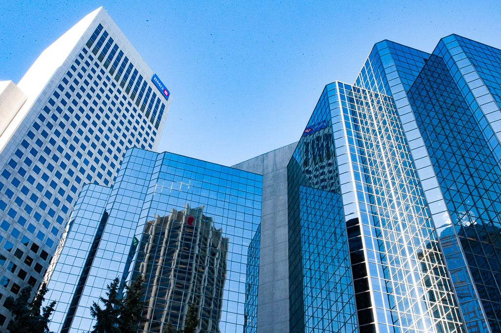

01Residencial
Espaços para viver.

CONSTRUÇÃO E REFORMA
Conheça uma nova proposta de apresentação para a atuação da Brascol e as possibilidades da sua próxima obra.
QUEM SOMOS
Engenharia, construção e reforma em uma apresentação que valoriza o que importa: entender a empresa e encontrar o caminho para conversar sobre uma obra.
Este redesign reorganiza a informação institucional em uma linguagem mais clara e contemporânea. Os textos são propostas editoriais, não novas promessas comerciais da empresa.
Conheça a apresentação institucional →ONDE ATUAMOS
COMO TRABALHAMOS
Conheça as modalidades e leve suas dúvidas para a conversa sobre o projeto.
Uma modalidade a conhecer na conversa sobre escopo, acompanhamento e responsabilidades.
Uma possibilidade de contratação cujas condições devem ser definidas na proposta e no contrato.
Uma modalidade para discutir demandas específicas e delimitar as atividades contratadas.
DO PRIMEIRO CONTATO AO ESCOPO
A proposta deste conceito é tornar os caminhos mais simples: conhecer, entender e conversar.
Apresente sua demanda →História e apresentação reunidas em uma página própria.
Segmentos e modalidades de contratação em grupos distintos.
Caminhos separados para obras, carreiras e fornecedores.
Uma solicitação organizada, sem orçamento automático ou promessas prontas.
DA IDEIA AO PRÓXIMO PASSO